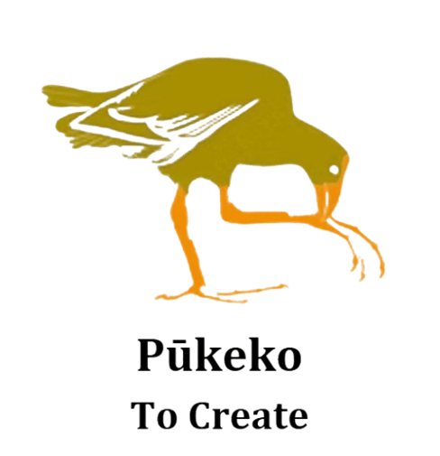

At OSC Dining 101, we are passionate about providing an exceptional dining experience that combines culinary excellence with warm hospitality. Our mission is to create a welcoming environment where guests can indulge in delicious food, crafted with the finest ingredients and served with care. We believe that dining is not just about nourishment but also about creating memorable moments and fostering connections. Whether you're joining us for a casual meal or a special occasion, we strive to exceed your expectations and make every visit a delightful journey of flavors and hospitality.


The purpose of OSC Dining 101 is to provide hospitality students with practical experience in running a restaurant. By transforming the school cafeteria into a fully operational restaurant once a term, students gain hands-on experience in food preparation, front-of-house services, and overall restaurant management. Although we are a restaurant dealing with real money and payments, all profits will go to KidsCan. KidsCan is a charitable organization dedicated to improving the lives of children in need by providing the essentials to Kiwi kids in hardship: nutritious food, warm clothing, sturdy shoes, and headlice treatment, so they can focus on learning and living.

At OSC Dining 101, our values are at the heart of everything we do. Inspired by the school’s norms, we embrace teamwork, growth and creativity in both the kitchen and front-of-house. We take pride in working together to create a welcoming environment where everyone feels valued and supported. Through Mokoroa, we approach work with an open mind, willing to grow through observation and reflection. We start as beginners, working towards gaining knowledge through practical work. We follow the Pukeko value by embracing creativity and teamwork. Just like proper restaurants, it cannot be run by a single person nor with a closed mindset. Showing Pungawerewere means utilizing prior learning to adapt and make further connections with the real world. We use theoretical learning in our practical work to gain knowledge and skills we can later use in the wider world.
.png)